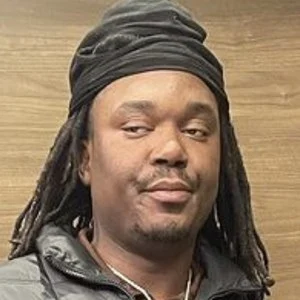
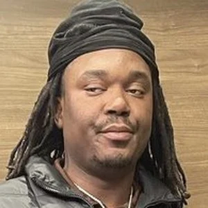

My name is Jordan Aladesuru


I was born in Chicago. My parents were born in Nigeria. I am 15 years old. I like to play basketball. My favorite Nigerian food is Jollof rice and my favorite American food is Fried Chicken. I like to learn about NFTs and how to create and flip them. I like the idea of building a community around your artwork and getting genuine support and also getting paid(hopefully). I also like playing a part in those communities and doing research to buy my own nfts from people and hopefully flip to make quick profit or to hold for the longterm.
I have 3 siblings: Joshua, Alexandria, and Jacob. Jacob is my younger brother who is 10 years old. Alexandria is my older sister who is 19 years old. Joshua is my older brother who is 22 years old. I enjoy family time especially with my older brother and sister since i dont get to see them as often because they are in college. They go to school at University of Illinois at Urbana Champaign I go to GEMS World Academy in Chicago, IL. I am currently doing a project doing a project in my computer science class where I have to create a website about myself.
 

My hobbies are to play basketball 🏀, draw, and learning game developement. I think basketball is fun because I just love playing the sport and I like high intensity sports that involve contact and a lot of moving rather than sports like volley ball which isn't enough movement or badminton or squash.
My goals are to become a operating systems developer and maybe game developement. I want to make my own operating systems like MacOS or Microsoft Windows but my own new OS. I like this idea because I'd like to create something new and as big as Windows or MacOS. I'm not too sure what I want to do with game developement but I like the idea of creating my own lore for a game and feeling like I'm inside that world when I'm playing the game. I don't like bland games that are just grinding games with no end. I like the idea of something outside of this world (but still realistic enough to suspend disbelief and bring in versimilitude.) I feel like others enojoy those types of games as well. I'm not sure if i'd like to crveate my own new game software to create games like for example roblox is a platform where you can create games. Or i'm not sure if i want to create games for a console or make my own platform on the web or app to create games(or both).
I like to take pictures and learn how to take photos. I think taking pictures is very fun and I would like to take it seriously and try to take pictures on a professional level just for my own sake of liking to take photos. I think when you do something good you're very proud of yourself and I'd like to be proud of my photos.